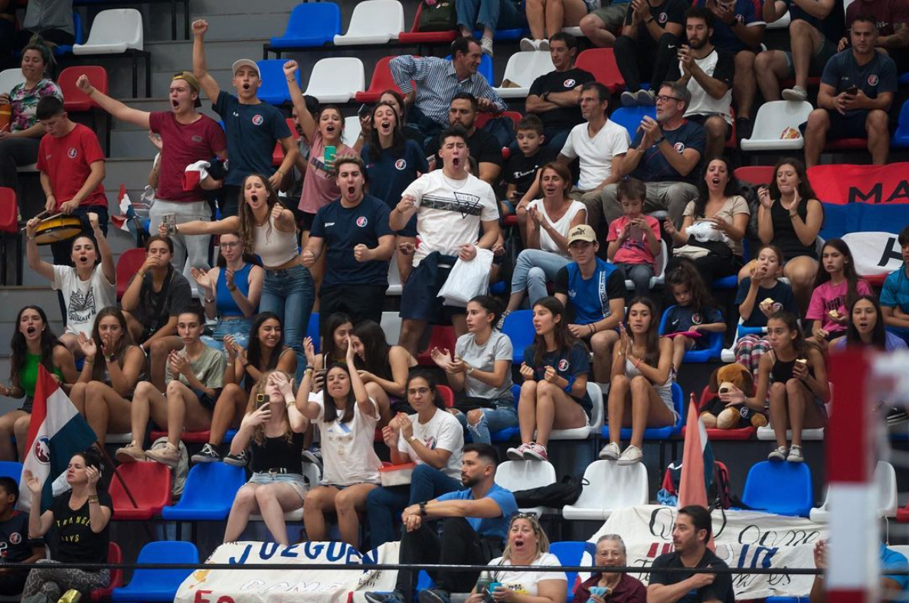

¿Quiénes somos?
Bienvenidos a "Handball Argentina", tu fuente definitiva para todo lo relacionado con el apasionante mundo del handball en Argentina. Somos una plataforma dedicada a promover, informar y celebrar el handball argentino en todas sus facetas.
En "Handball Argentina", nos enorgullece ser el epicentro virtual donde jugadores, entrenadores, aficionados y amantes del deporte se encuentran para compartir su pasión por el handball. Somos más que una página web; somos una comunidad vibrante que celebra el espíritu competitivo y colaborativo que define a nuestro amado deporte.
¿Quiénes somos? Somos un equipo comprometido de entusiastas del handball, compuesto por jugadores veteranos, entrenadores experimentados y apasionados seguidores que comparten un objetivo común: hacer crecer y fortalecer la presencia del handball argentino en todo el país.
En nuestro sitio, encontrarás información detallada sobre ligas locales, resultados de partidos, perfiles de jugadores destacados, entrevistas exclusivas con entrenadores y análisis profundos de las tácticas de juego. Además, ofrecemos cobertura en tiempo real de los eventos más destacados del handball argentino, manteniéndote siempre al tanto de las últimas novedades y emociones del deporte.